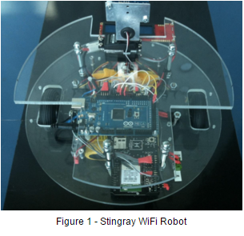
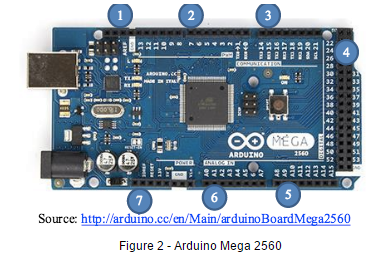
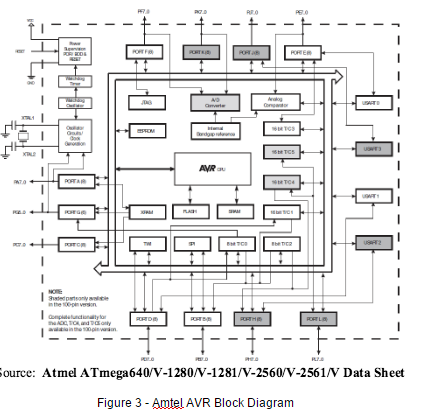
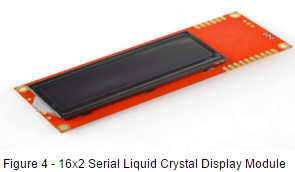
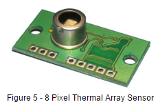
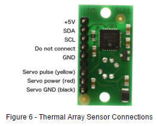
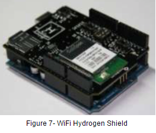
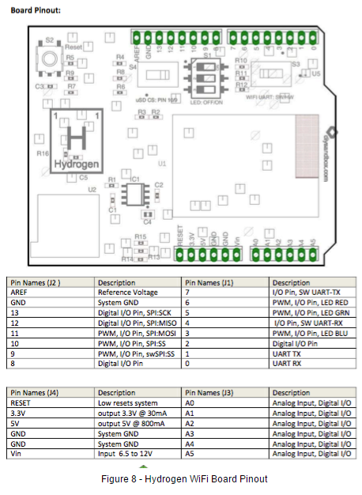
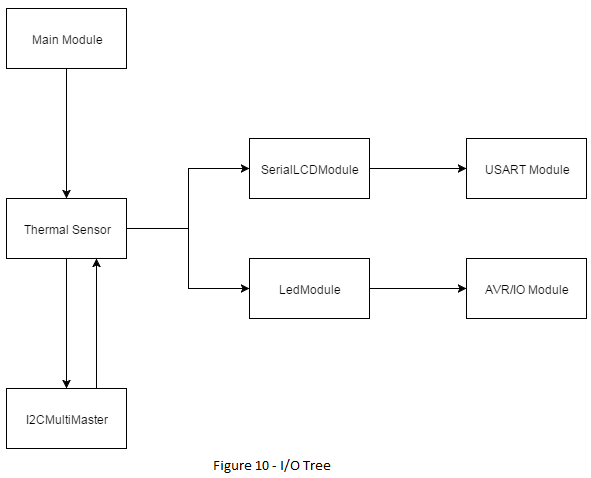

- Authors
- Daniel Hong
-
Saba Shaikh
-
Nnamdi Ibe
-
Ali El-Farou
-
Khalid Awil
-
Ogba Okparanyote
- Date
- 2016-02-07
Introduction
- This document describes the system requirements for Sprint 1. The system design is divided into hardware and software design. Hardware design describes the hardware used in the current product including background information to help understand the design. The software design provides background information, overview information of other software components used in the current product (in particular freeRTOS and its components),and a detailed design of the current product. Software design is modular and uses C software modules.
1.1 Scope
- This software product is identified as Chico: The Robot version 1.0.0. The expected functionalities and deliverables are:
- Setup and test the development environment, document background information about the Stingray robot and various components, the Arduino Mega 2560 card, and the FreeRTOS operating system
- Create a first version of the Product Release Document that presents the product requirements and design (this document)
- Complete the first release of the Chico: The Robot software, which will deliver functionalities and simulate the atmospheric temperature monitor overall. The rest of the document covers the overall description of the product and expected functionalities. The next section describes detailed requirements and deliverables for Sprint 1. See the references section for a list of reference documents that describe the details on the hardware and software components.
2 Overall Description
The Stingray WiFi robot is equipped with various hardware components such as the Arduino Mega 2560 microcontroller, a Serial LCD, Wi-Fi, an Ultrasonic sonar sensor, servo motors, and a photo reflector circuit. This section provides some details of these components to help the user understand the environment.
2.1 Product Perspective
- The Stingray WiFi robot currently mimics the functionality of a temperature monitor. This is achieved by using the existing hardware, including the Arduino Mega 2560 microcontroller, the Sparkfun HD44780U controller based serial 2x16 LCD, the Sandbox Hydrogen WiFi shield with built-in webserver, and the TPA81 Thermopile Array (Thermal Array Sensor) along with the FreeRTOS software modules to manipulate these components. Refer to the references section for more details on each hardware component.
2.2 Hardware Componenets
Stingray Wifi Robot
- The Stingray Wifi Robot (figure 1) specific components include:
- 2 Futuba FP-S148 continuous rotation servo motors for differential steering
- Hamamatsu P5587 photo reflector circuit with wheel incremental encoders
- Parallax PING ultrasonic sensor on a rotating motor
- 8 pixel thermal array sensor
- (DIY Sandbox) Arduino Hydrogen WiFi with built in web server
- Serial 16x2 LCD
- Arduino Mega 2560 Microcontroller
- 2 NiCad 1700 mA/h batteries and AC adaptor

The Arduino Mega2560 (figure 2) is a microcontroller board based on the ATmega2560. The AVR 2560-16AU installed on the Arduino Mega 2560 card is the 100 pin version which provides all parts shown in figure 3. It provides 256 Kbytes of flash memory, 4 Kbytes of EEPROM, 8 Kbytes of RAM, 86 general purpose I/O pins, 12 16-bit resolution PWM channels, serial USARTS, and 16 ADC channels. Refer to the AVR 2560 MicroController/Arduino/StingRay Summary Documentation for more details on the port functions, mapping, and memory map.


The main hardware components used for Sprint 1 include the serial LCD module, 8 pixel thermal array sensor, and the Hydrogen WiFi LEDs.
Stingray Robot Arduino Pinout
This section lists the Arduino Mega pins and its associated hardware of the Stingray robot. See the references section for more details on each part.
Wi-Fi Hydrogen Board
- Communication 6 - TX2
- Communication 5 -RX2
- PWM 10 - Sd Card Cs
- PWM 11 - Sd card MOSI
- PWM 12 - Sd Card MISO
- PWM 13 - Sd Card CLK
- PWM 3 - Blue LED
- PWM 5 - Green LED
- PWM 6 - Red LED
- Reset - Reset
Servos
- PWM 4 - right servo motor
- PWM 2 - left Servo motor
- PWM 7 - center servo motor
Sensors and Display
- Digital I/O 22 - Sonar Input
- Digital I/O 26 - Left Encoder input
- Digital I/O 28 - Right Encoder Input
- Serial TX1 - LCD Display
- SDA 20 - I2C Bus
- SCL 21- I2C Clock Bus
Serial LCD Module

- The 16X2 Liquid Crystal display (LCD), shown in figure 4, is used to display characters. A serLCD v2.5 module is used to interface the LCD. The module takes incoming 9600bps TTL levels and displays the signals on the LCD. Only three wires(5V, GND and Signal) are used to interface the LCD.
- SerLCD Features
- Incoming buffer stores up to 80 characters
- All surface mount design allows a backpack that is half the size of the of the original
- Faster boot up time than previous versions
- User definable splash screen included
- Processing speeds at 8MHZ
- Boot up display can be turned either on or off via firmware
- Adjustable baud rates between 2400,4800,9600,14400,19200 and 38400
- Operational backspace
- Backlight supports pulse width modulation
- The backlight transistor can handle up to 1A
- New PIC 16F688 utilizes onboard UART for greater communication accuracy
Thermal Array Sensor

- The TPA81 (see figure 5) is a thermopile array detecting infra-red in the range of 2um-22um. This is the wavelength of radiant heat. It has an array of eight thermopiles arranged in a row. There are 9 temperature readings available, all in degrees centigrade (°C). Register 1 is the ambient temperature as measured within the sensor. The TPA81 has 10 registers. Register 0 is the command register, registers 2-9 are the 8 pixel temperatures. Temperature acquisition is continuously performed and the readings will be correct within approximately 40ms after the sensor points to a new position.
- Features
- Can detect a candle flame from 6ft
- Unaffected by ambient light
- Simultaneously measures temperature of 8 adjacent points
- Can control a servo to pan the module and build a thermal image
- All communications are done via I2C.

Wi-Fi Hydrogen Shield
The Hydrogen from DIY Sandbox (see figure 7) is a fully integrated WiFi Arduino shield. Hydrogen provides certified 802.11b WiFi connectivity along with an integrated microSD card, true RGB PWM LEDs, integrated 3.3V LDO, dual stackable connectors, and hardware/software UART with SPI chip select.

- Features
- 802.11b certified WiFi Module by GainSpan or integrated antenna
- 11 Mbps WiFi module (throughput limited by Arduino processor clock speed)
- Universal connectivity to adhoc and infrastructure networks
- UF.L connector for external antenna
- Switchable software or hardware UART connection o WEP64/128,WPA/WPA2
- Supports WiFi access point generation
- Supports up to 16 TCP or UDP connections
- Dynamic site scanning of nearby access points including RSSI information or DHCP & DNS lookup
- Micro SD Card Holder
- Three Pulse Width Modulated (PWM) LEDs
- Individual on/off pin and fully customizable power levels
- Red Blue and Green LEDs for brilliant color combinations

2.3 Product Functions
- The objective of the Stingray WiFi robot, was to act as a temperature monitor. This was accomplished with three main functions, which work hand in hand to deliver the objective.
- Reading the temperature from the thermal array sensor
- Indicating the average temperature on the LED by change of color
- Displaying the ambient + 8 pixel temperatures on the LCD
- Firstly, the temperature is read from the thermal array sensor. This is accomplished by using the I2C Software Protocol to establish a communication between the microcontroller and the thermal array sensor. The microcontroller (acting as the master device), goes on to read the ambient temperature of the thermal sensor, as well as the surrounding 8 pixel temperatures; after which they are then made available to the other modules.
- Given the average temperature collected from the thermal sensors; the Hydrogen WiFi shield LED is used the indicate its range. The color of the LED is either blue, green or red, indicating the average temperature is below 30oC, between 30 and 40oC or 40oC or greater respectively. The microcontroller is used to turn on the LED using I/O voltage on pins, by sending a 0V. The intensity of the LED is also controlled using the I/O voltage pin, through pulse width modulation.
- The LCD display is used to display the ambient temperature of the thermal sensor, as well as the 8 pixel temperatures.
3 Requirements
3.1 Software Requirements
- This section provides detailed description of the functional requirements of Sprint 1. The requirements have been broken down into sections for each hardware component of the system.
- Temperature sensor
- The system shall read the surrounding ambient temperature using the thermal array sensor.
- The system shall read the 8 pixel temperatures using the thermal array sensor
- The system shall switch on the LEDs to emit three specific colours according to the average surrounding temperature
- The system shall emit a blue light using the LEDs if the average temperature is below 30 degrees celsius.
- The system shall emit a green light if the average temperature ranges between 30 and 40 degrees celsius.
- The system shall emit a red light if the temperature equals or exceeds 40 degrees celsius.
- LCD Screen
- The system shall display temperatures represented by at most two digits
- The system shall use the functions from usartserial.h as the bases of sending commands and writing to the LCD screen
- The system shall open the appropriate USART serial port for output to the LCD
- The appropriate baud rate shall be set (9600)
- USART1_ID shall be the USART serial port to open
- Queue lengths shall be set to constants portSERIAL_BUFFER_TX and portSERIAL_BUFFER_RX respectively
- The system shall display 'AMBT: 'to indicate the digits that represent the surrounding ambient temperature.
- The system shall display the surrounding ambient temperature on 1 line of the LCD screen
- The system shall display an appropriate message on the LCD screen when displaying the 8 pixel temperatures.
- The system shall clear the screen before each display update
- The system shall send command codes to the LCD to display on the appropriate lines
- The system shall display the temperature for 1000 / portTICK_PERIOD_MS before updating
Software Design
4.1 Background Information

- To enable reading from and writing to the thermal array sensor, the I2CMultiMaster software module was used. This module allows I2C communication via the hardware module provided in the Atmega2560 controller; thereby enabling us to configure the Atmega controller as the master device and the thermal array sensor as the slave device.
To print information to the LCD, the CEG4166_RTS_LIB USART module was used, this module allowed us to open the usart port for output to the LCD; and thereby enabling us to print characters on the LCD screen.
4.2 Thermal Sensor Software Module
- This module is responsible for reading information from the thermal array sensor. Communication between the atmega controller and the thermal sensor is done by using the functions provided by the I2CMultiMaster module.
- Firstly, the start sequence is sent with the master address, using the I2C_Master_Initialise function. Then the address of the thermal sensor (the slave device), along with the address of the internal address to read from, are then sent using the I2C_Master_Start_Transceiver_With_Data function. Afterwards, the read command is sent to the slave device with the I2C_Master_Start_Transceiver_With_Data funciton, and then the I2C_Master_Get_Data_From_Transceiver function is used to gather the data gotten the thermal sensor.
4.3 SerialLCDModule Software Module
- This module is used to print characters to the screen. Therefore, this module is responsible for printing the ambient temperature, as well as the 8 pixel temperatures read from thermal array sensor.
The screen is first cleared, and then using the usartWrite function, the cursor is positioned on the first spot on the LCD, in order to print the message “AMBT:”. Following this, the ambient temperature along with the 8 pixel temperatures are printed on the screen, moving the cursor each time to allow spacing between the temperature readings. After printing each set of the temperature values, a delay of 1000/portTICK_period_MS is used. This is done in order to keep temperature reading on the screen long enough to read.
4.4 LED Software Module
- This module is used to change the color of the LED, depending on the average temperature from the thermal sensor. Firstly, the pins assigned to the three LED colors (blue, green, red) are set to output at 5V. Afterwards, the LED colors are set according to the average value using the avr/io modules.
5 References
- G. Arbez, “StingRay WiFi Robot Documentation CSI4166/CSI4141,” rep., 2015.
- G. Arbez, “AVR 2560 MicroController/Arduino/StingRay Summary Documentation CEG4166/CSI4141,” rep., 2015.
- S., “Sparkfun Electronics SerLCD v2.5 Serial Enabled LCD,” 2006.
- “TPA81 Infra Red Thermal Sensor,” TPA81 Infra Red Thermal Sensor. [Online]. Available at: http://www.robot-electronics.co.uk/htm/tpa81tech.htm. [Accessed: Feb-2016].
 1.8.11
1.8.11